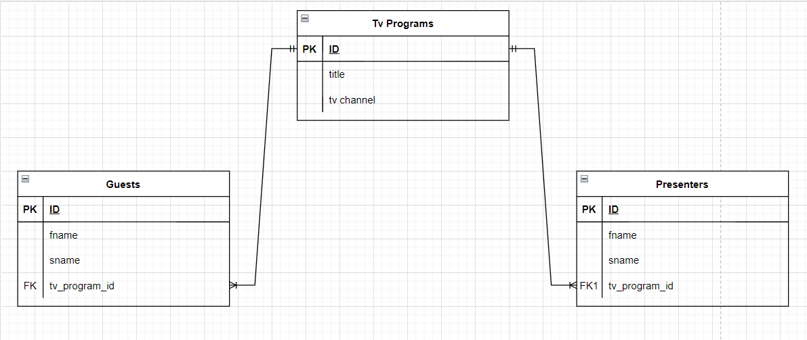

<h3>Варіант-9. Предметна область - "Програми передач для телебачення"</h3><br>
<br>
На Даталогічній моделі видно, що БД була нормалізована до НФ3, усюди існують первинні ключі, всі атрибути 
від них залежать та немає транзитивних залежностей.